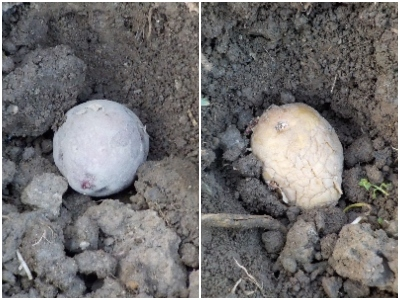

更新日 : 2026/03/20

小さいジャガイモがいっぱい残っています。これの皮をむいたら更に小さくなって料理に使いにくいと思いました。
種芋にすれば有効活用になるかなと思い植えました。
今までも古いジャガイモを種芋にしたことはありますが、今年はかつてないくらい沢山の古いジャガイモを植えるつもりです。
病気とかで失敗したらガッカリですが、商売じゃなくて遊びなので、楽しんでやるぶんには問題ないかなと思いました。
収穫したジャガイモは病気があるから植えてはいけないって言いますよね。でも食べるのはいいんだって思いました。
【おいしいものを食べよう。】【たくさん寝よう。】
【ソロ活をしよう!】【季節感のあることをしよう。】【動画視聴はほどほどに。】【当サイトの全てのコンテンツは無断転載禁止です。】